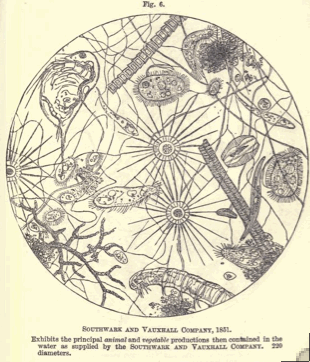
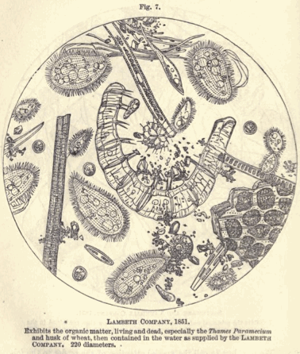
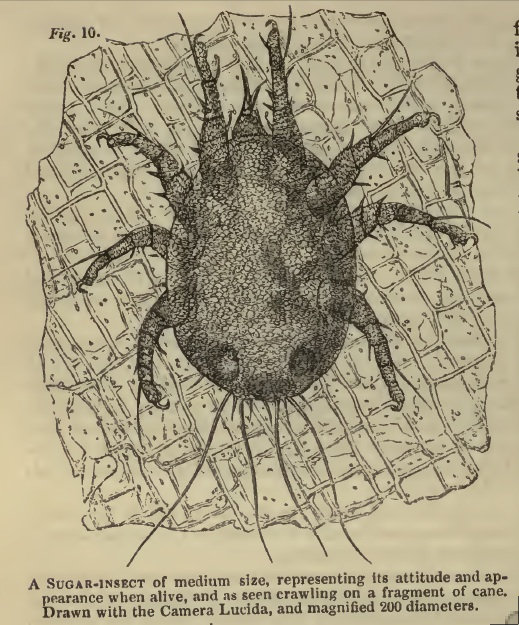
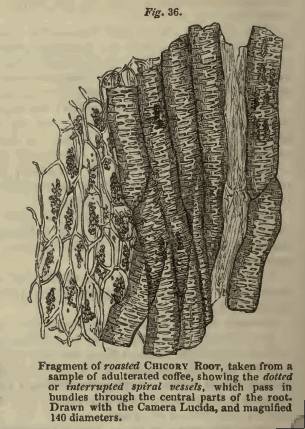
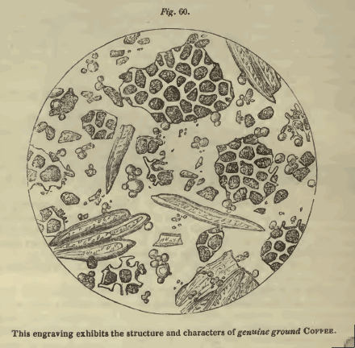
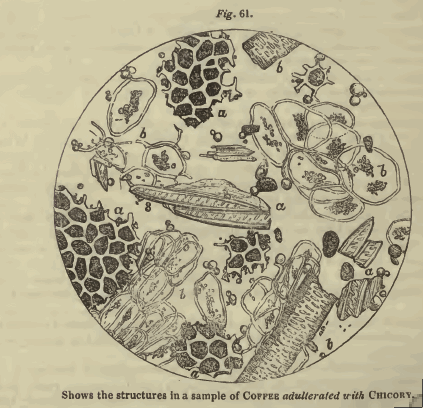
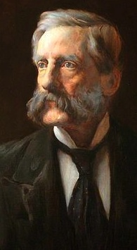

ランセットの「分析衛生委員会」の1851〜54年の報告を含み修正・拡大している。
すべての階級の公衆が利用している、色々な小売商、製造者および商人から購入した、
固体および液体の独自の顕微鏡および化学分析の記録である。
食物の材料として使われた多数の植物性の物質および混ぜ物として使われている
多くの物質の微細構造159図を示している。
医博アーサー・ヒル・ハッサル
献呈の言葉
ベンジャミン・ホール卿 下院議員、保健総局長官
人々の衛生状態が今日の大きな社会問題である事実は遂に認識されてきている。何故かと言うとこの領域を通じてこれこそ金持ちおよび貧者とくに後者において利益や幸福やさらには安全までに強く作用するからである。
この国だけでなく世界全体におけるこれの巨大な重要性を示すために一つの統計的事実だけを示す必要がある。すなわち当然な衛生上の用心および衛生の基本的な法律と規則を違反することによって、戦場で倒れる以上にもっと多くの人たちが死亡し今なお死亡し続けている。
健康を障害し寿命を短くする傾向の原因は多くあり、我々の周囲に常に存在する。しかし大部分はある種の項目たとえば悪い空気、不純な水、および混ぜ物処理をした（adulterated）飲食物に属している。これらの原因のうちで最後のものは間違いなく重要であって、ここで貴方に献呈するこの本の諸ページに種々の事実が豊富に示されている。
この国の保健省の長として衛生改革の問題についての興味ある問題の大量な事実が貴方の前に持って来られることは疑いない。これについて私は貴方が完全に賢明であることを知っているし、それだけでなく貴方は任せられた力をできるだけ働かせて人々の衛生状態を改良し、改良することによっていろいろな経路で活発に彼らの福祉に貢献する決心をもっている。
重要で決定的な進歩の時期にある衛生運動を導くことを要請され、貴方は既に多くの優れたことをしてきた。そして疑いも無く貴方の考えが発達するのに充分な時間が過ぎたならば人民にとってもっと大量の利益が得られるであろう。
衛生改革の重要性を人々は完全に理解していて、実行するために必要なすべての方策を支持するべく用意している。そして議会もまた訴えれば同じようであろう。そして疑いもなく次の会期はそうであろう。つい最近に我々のあいだを通り過ぎた流行病（＊コレラ）のときに衛生対策を行なっていたすべてのものにとって明らかなことは、保健総局（General Board of Health）の権力は現在の状態ではこの種類の非常事態を取り扱うのに全く不適なことである。公衆衛生に関係する普通の緊急事態においてさえ同じようである。
この本を貴方に献呈する理由は、これが公衆衛生の重要な分野であり、すべての人たちの間で貴方は挨拶するのに最も適したこの国の衛生改良の長だからであり、さらに貴方は混ぜ物処理の問題に対処する意思を表明しているからである。
私は貴方を非常に尊敬する従順な召使である。
アーサー・ヒル・ハッサル
８．ベネット・ストリート、聖ジェームズ・ストリート、1854, 12月
序論
この著作の各ページには食物および飲み物の混ぜ物処理（adulteration）の問題が詳細に記録されている。この問題は重要であり国家的な重要問題と言うことができる。医学で使われている種々な物質と関連させて考えると、もしも可能なら、更に高度で深刻な問題である。
この問題の大きく重要なことは、アークムを最初とし次いでミッチェル、ノーマンディ、シュヴァリエ、およびムシュー・ジュール・ガルニエとアレルの諸著作の刊行および、それとともに時とともに種々の国で混ぜ物処理をやめさせる幾つもの法令が通過したことにから明らかなように少なくともかなり既に認識されている。しかし強く要求されているこの問題は種々な理由によって十分な注目を受け取っていない。理由の一部はこの悪がほんの最近になって十分に知られるようになったものであり、主として本書に記録された研究によるからである。今ではこの災難の大きさが明らかになり行われている幾つかの混ぜ物処理の方法が容易に見つけ出され指摘されて、我々の希望によると、非常に短い期間にこの問題が充分に考慮され議論され幾つかの立法を期待することが出来るであろう。
混ぜ物処理の行い方にはいろいろな種類と程度がある。第一の混ぜ物処理方法はふつう容量や重さを増やすために、価値が非常に低い物質を加えることである。何を選ぶかは代用品の安価なことと特定な混ぜ物処理に適するかどうかによる。これは行われている混ぜ物処理の主なものであり最もしばしば記載されている。
混ぜ物処理の第二の型ではいろいろな種類の着色剤が加えられる。これは色を強くして外見を良くするとともに、他の混ぜ物処理を隠蔽するためと考えられている。これは広く行われている混ぜ物処理であり、最も不快であり、すべてのうちで非難されるべきものである。何故かと言うと着色するために高度に有害な物質、ときには鉛、銅、水銀、ヒ素の種々の化合物のように有毒な物質がしばしば使われるからである。これらの物質の多くの使用例はこの報告の諸ページに記録されている。
混ぜ物処理の第三の型は香り、風味、刺戟その他の性質を与えるための物質の追加である。
ここで実際の観察および上記の３つの目的に使われるものの解析によって証明された主な物質を数え上げることにしよう。３つの目的とは、重さと容量を増やすこと、色を加えること、および香りや刺戟のため、である。
種々の物品に重さと容量を加えるために用いる物質で本書において報告したのは次の通り（リスト省略）である。
着色するため、および他の混ぜ物処理を隠すために使われる主な物質は次の通り（リスト省略）である。
第三の目的、すなわち香り、風味、刺戟、その他の性質を与えるために使う主な物質は次の通り（リスト省略）である。
上記のリストは例外なく本書において実際に記録されている独自の解析を行った物質であり、実際に使われた明白な事実を示している。もしも混ぜ物処理の目的で使われてきたり使われたすべての物品が並べられたら、他の観察者たちの権威によってこのリストは３倍になるであろう。しかし、これらを加えることは推奨できない。多くの場合に問題となる論文の著者は自分自身の観察や研究について述べるのではなく、以前の著者たちの権威によってなされた種々の発言を公表し採用しているからである。このようにして多くの誤りがこの主題に入り込み、従って混ぜ物処理を取り扱っている研究においては個人の研究によって確かめられていない発言が少なくない。それとともに上記の私のリストには本書で報告された食物と飲み物中の物品だけを記していて、医学の領域で使われている種々の産物を含んでいないことを覚えていて欲しい。これらを加えたらリストはもっと膨れ上がったであろう。薬物や薬品の混ぜ物処理に関係する多くの重要な事実は別の機会に譲ることにしている。さらに、もっと観察と研究を広げると、疑いもなくこれらのリストに加えてもっと多くの物質が使われている。
上記の３つの分類のどれに属するとしても、すべての混ぜ物処理は我々の研究の過程において我々自身によって発見されたものであり、つぎの表に示される。
表題： 混ぜ物処理すなわち容量および重量、着色、香り、味、その他の目的に使われることを我々自身が確かめた種々の物質。（＊リスト省略）
この表は既に述べたように食物として消費される固体ならびに液体の混ぜ物処理に使われる殆どすべての物質を含んではいない。含まれているのは分析した幾つかの商品において我々が自分で実際に見つけたものである。従って、ラム酒、英国および外国のワインの酒精であるブランデー、チーズ、蜂蜜、甘草などについての残りの報告が刊行されると、このリストは疑いもなく拡大されるであろう。
上のリストとともに３つの他のリストが与えられる。第一は使われていることを他の人たちが確かめたものであり、第二は他の著者たちが使用されていると言及し大部分は使われていることおよび時に使われている可能性は大きいが、疑問の余地の無い証明が与えられていないものである。そして第三のリストは時には混ぜ物処理の目的に使われていると言及されているが可能性の少ないものである。
表題:混ぜ物処理に使われていることが他の人たちによって確かめられたもの。（＊リスト省略）
表題:混ぜ物処理の種々の目的に使われていると他の人たちにより言明されていて、その多くのものは使われてきていて時には可能性が極めて高いが、信頼性のある事実が提示されていないもの。（＊リスト省略）
表題:混ぜ物処理に使われていると言明されているが使用されていないと思われる物品（＊リスト省略）。
種々の消費物資の分析で到着した結論を以下のように列挙したのは、研究の性質および範囲についてある概念を伝達し、読者が最小の困難および時間の消費でこの研究の本体に含まれる主な事実および結論を獲得できるためである。表題:混ぜ物処理の種々の目的に使われていると他の人たちにより言明されていて、その多くのものは使われてきていて時には可能性が極めて高いが、信頼性のある事実が提示されていないもの。（＊リスト省略）
表題:混ぜ物処理に使われていると言明されているが使用されていないと思われる物品（＊リスト省略）。
コーヒーとその混ぜ物処理
分析に用いた挽いたコーヒーの第一シリーズ標品を顕微鏡観察して得た結論は次の通りであった。
１．34標品のコーヒーは３標品を除いて混ぜ物処理をされていた
２．31例においてチコリー（キクニガナ）が存在した
３．12例で炒った小麦
４．インゲン豆とジャガイモ粉がそれぞれ１例づつ
５．６例の混ぜ物処理はチコリーだけであった
６．残りの15標品で混ぜ物処理はチコリーおよび炒った小麦またはジャガイモ粉からなっていた
７．多くの例において存在するコーヒーの量は非常に少なく、他の例では全量の1/5、1/4、1/3、1/2などであった
同時に分析した第二シリーズにおける結論は次の通り
１．20標品のうち18標品はチコリーで混ぜ物処理をされていた
２．４標品はチコリーの他に炒った小麦を含んでいた
コーヒーについての第二の報告、このシリーズの検査の結果として得られた結論は次の通りであった。
１．検査した42標品のコーヒーのうちで11は混ぜ物処理をしていなかった
２．残りの31標品はすべてチコリーが混ぜてあり、多くの例において試料の主な部分を占めていた
３．２例においてだけチコリーが観察された他の混ぜ物処理が見られた。一つはセイヨウトチノキ（horsechestnut）に似た植物性のもので、他は無定形の物質でたぶん着色に使われたのであろう
コーヒーについての第三の報告 小缶入りのものについて。得られた結論は次の通りであった。
１．分析したパッケージ、瓶、缶に入った29標品は１つの例外を除いてすべて混ぜ物処理をされていた
２．28標品はチコリーの混ぜ物がされていた。この根は多くの場合に商品の主な部分を占めていた
３．コーヒーのうち５標品は炒った小麦デンプン、およびサトウダイコンの根およびドングリに似た物質を含んでいた
コーヒーについての第四の報告 後に行ったコーヒー標品分析の他のシリーズを調べた結果は次の通りであった。
１．検査を行った20標品のコーヒーのうちで19標品はチコリーの混ぜ物がされていた
２．標品の幾つかは燃やすと赤色の酸化鉄が残る。これはコーヒーに含まれるチコリーの混ぜ物処理に使われたヴェニス赤のような鉄分を含む土地成分から生じたものである
コーヒーについての第五の報告 標識をしたパッケージの中にチコリーとコーヒーの混合物を売ることが公認されたすぐ後で買った34標品を検査した結果は次の通りであった。
１．すべてコーヒーとして購入した34標品のうち３標品のみは真正であり少なくとも31標品はチコリーを種々の割合で含んでいた
２．６標品は商品の３分の１にチコリーを含んでいた
３．22標品でチコリーは商品の２分の１であった
４．３標品はほとんど全体がチコリーであった
５．13標品はチコリーとコーヒーの混合物とは書いてなかったが10標品はチコリーが混ぜてあった
６．残りの21標品はすべての例において「コーヒーが明らかに要求されている」ものであるにも拘わらず「チコリーとコーヒーの混合物」と標識されていた
コーヒーについての第六の報告 前に34標品を購入した数日後に同じ店から挽いたコーヒー34標品を購入して検査した結果は次の通りであった。
１．すべてコーヒーとして購入した34標品のうち９標品は真正であったが、25標品以上は種々の割合でチコリーを含んでいた
２．８標品においてチコリーは製品の約３分の１の割合で存在した
３．14の標品においてチコリーは約半分であっ
４．３標品はほとんど完全にチコリーからなっていた
５．標品のうちの２つは「チコリーとコーヒーの混合物」と標識してはなかったが、チコリーにより混ぜ物処理をされていて、混ぜ物処理を生計としていた両者ともに100ポンドの罰金に処せら
６．「コーヒーが明らかに要求されている」であったのに、25標品においてチコリーを含んでいた。23標品は「チコリーとコーヒーの混合物」と標識されていた
従ってこれら２つの分析表を比較すると、我々の以前の報告の結果として標識をつけないでチコリーとコーヒーの混合物を売ると100ポンドの罰金に処せられるので、慎重になっていることが判る。そしてまたディーラーの多くは要求されると真正品を売っている。しかし、「混合物」は今でも公衆にコーヒーとして騙して売られている。
この報告の追加としてコーヒー10標品を購入したが、その結果は次の通りであった。
２標品は「チコリーとコーヒーの混合物」と標識されていたがコーヒーとして売られていた。１つは「チコリーとコーヒーの混合物」として売られていて、事実はその通りであった。７標品は真正品であった。
砂糖とその混ぜ物処理
黒砂糖36標品の検査から次の結論が得られた。
１．砂糖黍の断片はしばしば非常に小さく顕微鏡で初めて見ることができるもので、１標品を除く前例で検出することができた。この例外の標品は非常に白い砂糖であり、濾過によって精製されていて、精製糖または角砂糖にすることを意図したものであった。
２．不快な昆虫であるダニ（ascari）は36標品のうち35標品に存在し19例にはかなりの数が存在した
３．カビ（fungi）の胞子（sporule）と線維は少なくとも10例において存在した
４．ブドー糖は36例すべてに検出され時には非常に大量であった
５．糖のすべてに種々の量の植物アルブメン（タンパク質）が含まれていた
６．すべての糖に木材線維が多かれ少なかれ見られた
７．少なくとも11例において石の粒子または埃が観察された
８．すべての糖標品に種々の量のデンプンまたは穀粉が個々の顆粒または顆粒と細胞の集合体として含まれていた
９．糖の４標品において穀粉の量はかなり多く、明らかに混ぜ物処理の目的で使われていた
角砂糖の15標品の検査結果は次の通りであった
１．どの糖にも砂糖黍の断片は存在しなかった。砂糖の精製のあいだに木炭を通して濾過によって分離されていた
２．ダニはどの例にも見られなかった
３．３例にだけブドウ糖が痕跡的に見られた
４．どの例にもカビの胞子は見られなかった
５．15例すべてにおいて量は異なるが非常に少量の穀粉が存在した
６．10例において動物性の物質が観察された
７．木材線維の鋸屑様の断片が12例で見られ、少なくとも７例において大量であった
第二の報告
種々の店で最近に購入した黒砂糖を検査する第二シリーズから次の結論が得られた。
１．砂糖の昆虫であるダニはすべての砂糖に存在し、標品の多数において大量に存在した
２．カビの胞子は同じようにすべての砂糖に存在した
３．36標品の糖のうち２標品は穀粉によって混ぜ物処理をされていた。１標品はタピオカ、もう１標品はジャガイモ粉が加えられていた
アロー・ルートとその混ぜ物処理（＊略）
コショウとその混ぜ物処理（＊略）
辛子とその混ぜ物処理（＊略）
チコリーとその混ぜ物処理（＊略）
パンとその混ぜ物処理（＊略）
小麦粉とその混ぜ物処理（＊略）
エルヴァェンタ・レヴァェンタ（＊略）
ココアとその混ぜ物処理（＊略）
オートミールとその混ぜ物処理（＊略）
茶とその混ぜ物処理
輸入したものおよびこの国の商人から購入した種々の紅茶および緑茶の分析から得られたうちでもっと重要な結論は次の通りであった。 紅茶について確かめられた主な点は次の通りであった。
１．主な紅茶 --- すなわち工夫茶と小種茶、は大部分はこの国に到着したときに真正の状態である
２．紅茶のある銘柄たとえば香りつきオレンジ・ペコエとかケイパー（Caper）はいつでも混ぜ物処理をされていて、混ぜ物処理は一般に石墨または黒鉛による茶葉の色付けである。ケイパーは同じように稲藁、リー茶（Lie tea）など茶葉以外の葉のように他の物質を混ぜている
３．種々の偽物ケイパーやガンパウダー（中国産高級茶）紅茶が作られ、これらは茶屑や他の葉の屑および砂を含み、ガム（粘性物質）で小さい塊にし、石墨、プラシャンブルー、ウコンの粉で表面を覆ったり色付けしている。時に偽物は別にして売られることもあるが、非常にしばしば上等のケイパーすなわち石墨だけで覆った茶葉に加えて混ぜ物処理をする。
緑茶について主な結論は次の通りである。
１．これらの茶は大英帝国で育て製造したアッサム（インド北東部）からのものを除くと、いつでも混ぜ物処理をされている。すなわち種々の着色物で照りを出している
２．着色物は一般にプラシャン・ブルー、ウコン粉、およびチャイナ粘土であって、他の添加物は時に使われるが頻繁には使われない
３．これらの着色物プラシャン・ブルーすなわちフェロシアン鉄は健康に傷害を及ぼすとみなされている
４．この国では実際に緑茶と言うべきもの、すなわち自然の緑色をしている茶は存在しない
５．緑茶、特にガンパウダーは覆ったり照りをつける他に、紅茶よりも他の方法で混ぜ物処理を受ける。茶の葉以外の葉たとえば稲藁そして特にリー茶が混ぜられる
６．リー茶は緑茶に似たように作られシナ人自身がガンパウダー茶を混ぜ物処理するために広範に使っている。また我が国にも大量に送られてきていて我が国の茶商人や雑貨商によって同じ目的に使われている
上記は輸入された紅茶および緑茶の状態についての重要な結論であるが、これらは我が国においてさらに悪い状態にされている。従って次のように事実を提出する。
１．使った茶葉はしばしばガムその他で化粧して真正の紅茶、そして人工的に色および照りをつけて時には緑茶として大衆に再び売っている
２．着色に使われる物質はしばしば高度に有毒であって、多くの場合にシナ人が使っているものよりもより反対すべきであるし有害である
３．紅茶と緑茶が茶の葉ではなく茶の性質を持っていない植物の葉から作られることは珍しいことではない
４．紅茶のリー茶はしばしば色を付けて我が国のディーラーや雑貨店によって緑茶の混ぜ物処理に使われている
ミルクとその混ぜ物処理（＊略）
アイシングラスとその混ぜ物処理（＊略）
食酢とその混ぜ物処理（＊略）
ピックルスとそれらの混ぜ物処理（＊略）
ショウガとその混ぜ物処理（＊略）
ターメリックとその混ぜ物処理（＊略）
シナモンとその混ぜ物処理（＊略）
桂皮とその混ぜ物処理（＊略）
ナツメグとその混ぜ物処理
ナツメグ18標品を調べた結論は
１．消費者が入手するナツメグは一般にその精油が取り去られてはいない。この点は普通に指摘されている意見とは異なる。
２．イギリスの市場で出会うものは石灰を加えてあることは殆ど無い。（＊真正なことを明記）
ニクズクとその混ぜ物処理
結論は 調査した12標品はすべて真正であった。（＊真正なことを明記）
チョウジとその混ぜ物処理（＊略）
オールスパイスとその混ぜ物処理（＊略）
ミクスト・スパイスとその混ぜ物処理（＊略）
有毒なトウガラシとその混ぜ物処理（＊略）
カレー粉とその混ぜ物処理（＊略）
有毒な瓶詰め果物と野菜
結論は次の通りであった。
１．プリザーブド果物および野菜の33標品のうちで７標品は銅の汚染が無かった。
２．27標品は多かれ少なかれ銅が沁み込んでいた。
３．３標品に銅の痕跡が見つかった
４．７標品で銅は少量のみ存在した
５．８標品はかなりの量の銅を含んでいた
６．６標品で金属は非常にかなりの量の銅を含んでいた
７．４標品は非常に大量の有毒な金属を含んでいた
８．ライムの標品は銅を含んでいて１標品だけは少量だけだったが、他はもっとかなりの量であった
９．ふつうプリザーブにするグーズベリはかなりの量の銅を含んでいて、ある標品は非常に大量を含んでいる。
10．ダイオウ（rhubarb）はふつうかなりの量の銅を含むが標品によっては非常に大量に汚染している
11．グリーンゲージには一般にかなり大量の銅が存在し、この金属はしばしば高度に危険な量が存在する
12．この有毒な染み込みはオリーヴに大量に存在しているが、他の例（果物）のようにこの果物の色を良くするのに有効では無い
13．プリザーブした赤い果物、たとえばアカスグリ、ラズベリー、チェリーは一般に銅で汚染していなかった
アンチョビ、その代用品および混ぜ物処理
28種のアンチョビ標品の検査で得た結論
１．標品のうち７標品はオランダ産（＊正式には地中海産）
２．２標品はオランダ産とアンチョビの混合物
３．23の標品で塩水にはアルメニア赤またはヴェニス赤が含まれていた。その量はかなり異なっているが、多くの例において塩水に入っていたこれらの土は瓶の底から茶匙に一杯も集められ得られるほどであった。
瓶詰め肉および魚とその混ぜ物処理（＊略）
ソースとその混ぜ物処理（＊略）
プリザーブとジャム
いろいろな種類のプリザーブとジャムを検査して得た結論
１．分析したラズベリ・ジャムはかなりの量の銅を含んでいた
２．検査したグズべリ・ジャムの４標品はすべて銅を含んでいた
３．分析したオレンジ・マーマレド14標品の12標品で時には大量の銅が見つかった
４．マーマレドの３標品は多分カブまたはリンゴと思われる大量の植物性物質により混ぜ物処理をされていた
５．グリーンゲージ（西洋スモモ）ジャムの９標品は多かれ少なかれ銅で汚染されていて５標品にはかなり大量に存在した
６．３つの異なる箱に入った砂糖漬け（Crystallized）果物のグリーンゲージはすべてその深い緑色は銅の存在によっていた
７．ジェリー内保存果物の小瓶中にあるライムとグリーンゲージもまたその鮮やかな色は銅塩によるものであった
８．分析を行った砂糖漬けシトロン皮の３標品に銅が存在した
９．分析した種々のプリザーブの35の標品のうち33以上で銅が検出された。３標品は痕跡だけであった。11標品では少量の銅が存在した。そして19標品ではかなり多いかまたは非常に大量に存在した
ラードとその混ぜ物処理（＊略）
バターとその混ぜ物処理（＊略）
パイプタバコとその混ぜ物処理（＊略）
葉巻および両切り葉巻とその混ぜ物処理（＊略）
嗅ぎタバコとその混ぜ物処理（＊略）
有毒な着色した糖菓子
着色した糖菓子の百以上の標品の検査により、次の重要な結論および問題が得られた。
１．使われた主な色は黄色、ピンクと緋色を含む赤、褐色、紫、青色、および緑色である。
２．黄色のうちで７標品はレモン・クロームまたはクロム酸鉛の薄色の種類であった。
３．５標品はオレンジ・クロームまたは深色のクロム酸鉛で着色してあった。
４．47標品は明るい色またはカナリア色のクロム酸鉛で着色されていた。
５．標品のうち11はガンボージ（硫化ヒ素）で着色されていた。
６．上記標品の色素の多くは表面に限られていたが、多くの例において色素は使った糖のすべての中に同じように浸透していた。
７．赤色のうちで61標品は主として有機的なピンク色素のコチニール（Coccus Cacti）で着色されていた。12標品では着色剤は鉛丹（minium）すなわち赤色酸化鉛であった。
８．６例において着色剤は朱（vermilion）、辰砂（cinnabar）すなわち硫化第二水銀であった。
９．褐色のうちで、８例はヴァンダイク・ブラウン、アンバー、シェンナの褐色鉄質土であった。
10．紫色のうちで２標品は主な成分はプラシャン・ブルーからなるアントワープ・ブルーとコチニールと思われる有機赤色色素の混合物であった。
11．ブルーのうちで、１例はインディゴで着色されていた。11例はプラシャン・ブルーすなわちフェロシアニド鉄で着色されていた。11例はプラシャン・ブルーを変化させたアントワープ・ブルーで着色されていた。15例の着色剤は人工のジャーマン群青（ウルトラマリン）であり、これはナトリウムとアルミニウムの硫化物である。
12．緑色のもののうち５例は淡い種類のブラウンシュヴァイク緑で染められていた。４例は中間色のブラウンシュヴァイク緑で染められていた。１例は深色のブラウンシュヴァイク緑で染められていた。これらの緑はクロム酸鉛とプラシャン・ブルーの種々の割合からなっている。１標品は緑青すなわち炭酸銅で染められていた。９例はシェーレの緑、エメラルド・グリーン、すなわち銅の亜ヒ酸塩で着色されていた。
13．上記の色は場合によって色々に組み合わされていた。同じ菓子の箱に時により３，４，５，６種、ときには７種の色素が入っていて３種または４種もの毒が入っていた。
14．４標品において使っている色素は白い鉛、すなわち炭酸鉛を使って描かれていた。このことはすべてのケーキ飾りで見られた。
15．上の分析によって更に明らかになったのは、13標品は硫酸石灰水和物で混ぜ物処理がなされていて、その量は4.3から43.66％に及んでいた。21標品は種々の粉が混ぜられていて、量は1.66から25.56％に及んだ。17例でデンプンは小麦粉からなり、３例ではジャガイモ・デンプンであり、１例では東インドのアロウ・ルートであった。
ポーターとスタウト、およびそれらの混ぜ物処理
１． 下記はロンドンの幾つかのポーター醸造者およびパブから得たロンドンのスタウトおよびポーターの標品について行った分析によって到達した結論である。
２．代理業者から手に入れたり主なロンドンの醸造者の幾つかの樽呑口から買ったスタウトの標品はパブから手に入れたものよりもかなり強い。華氏60度（摂氏15度）で比重0.796（無水アルコール）の含量が前者では最高7.15％最低4.53％であるのに、パブで入手したスタウトは１例を除いて4.87％から3.25％と変化する。
３．ポーターについても同じような強さの違いが入手源の二種類の違いによって特徴づけられた。樽呑口から入手したポーターのアルコール量は4.51％から2.42％であったが、パブで買ったものは3.97％から1.81％に分布した。
４．ほとんど全てのスタウトとポーターには塩が入っていて、ときにはかなりの量であった。
５．標品のあるものには蔗糖や糖蜜が同じように存在していた。
６．醸造者の樽呑口から買わないで標品を直接に幾つかの醸造所から手に入れると（ビールの）強さがもっと異なると信ずる理由がある。
７．パブで買ったビールの強さが弱くなるのは多くのばあい水を加えていることのみにより満足に説明できる。この水増しはパブその他のモルト蒸留酒商人によってなされている。
８．水増しはこの飲み物（ビール）に行われる唯一ではないが主な混ぜ物処理である。
９．このようにして水増しは強さ、香り、色を低下させ、ある場合にはその結果として更にビールの混ぜ物処理が必要になり、普通これは非常に粗悪な種類で粗糖（Foots）と呼ばれる糖蜜を含む黒砂糖および塩によって行われる。
10．醸造所で蔗糖の使用が許されているので、分析した標品のうちでどれが蔗糖を含んでいるか確かめることを敢えてしなかった。何故かと言うと標品のどれかに見つけたとしても醸造者かパブのどちらがこれを使った当事者であると公言できないからである。しかし醸造者が糖を使うのは稀であると私は信じている。それはある程度の割合で蔗糖のあるビールはモールトだけで作られたビールのように保存できないからである。さらに糖の値段は醸造者が利用するのに障害となる。
11．分析によるとポーターにはほとんど常に塩が存在する。これを加えるのはまず最初に醸造者自身であることを私は知っている。しかししばしばパブでさらに量を増やして、水を加えることによって低下した香りを高めようとすることは疑う余地がない。ポーター内の塩の量はしばしば充分に大きく口に塩を感じさせる。塩を醸造者は次のように使用する。すなわち、最初に桶の中で粉、ふつう小麦粉、と混ぜ、混合物を冷却用大桶の中のウワート（麦芽汁）表面に一握り振りかける。これはウワートを保存し良好な状態にするのを助け、醸造者が塩を使う唯一の目的であると云われている。
ジンとその混ぜ物処理（＊略）
（＊考察に相当する部分が始まる）
混ぜ物処理を行い罪を犯すグループについて感想を述べることにしよう。この著作の至る所に事実が述べられている消費物資（藥品を含む）を作り、焼き、粉にする人たちが主な犯罪者である。このようにして炒ったチコリー粉末、炒ったコーヒーやココアの混ぜ物処理は、多くの場合にチコリーやコーヒーを炒ったり粉にする専門家の仕事である。種々の木材の線維や鋸屑およびスパイス類や種々の粉薬に見つかる多くの混ぜ物は、主としてスパイスや薬を粉にする人たちによって添加されている。他方、ピックルスや瓶詰め果物の銅や瓶詰め肉・魚のアルメニア赤やヴェニス赤の粘土はこれらの商品を作る他の種類の製作者たちによってすべて添加される。あれこれの多くの他の混ぜ物処理は小売商人が行うことは殆ど不可能である。ある場合にはこのために特殊な機械が必要だからである。それにも拘わらず、後者（小売商人）は程度は低いが混ぜ物処理において役割を果たしている。この区別は重要である。このことは見つけた種々の混ぜ物処理を抑えこむ方向を示すからである。
さて混ぜ物処理の問題を考えるに当たって今度は我々が気づく他の観点に移ることにしよう。すなわち金銭的および経済的、衛生的および道徳的な観点である。
固体および液体の消費材の混ぜ物処理の問題に関係する金銭的な考察は非常に重要である。これらは購入者、販売者および税金の歳入に関係する。
購入者すなわち消費者のこの問題の金銭的な関係における利益は非常に大きい。消費されるすべての品物は２つに区分することができる。すなわち、国に税金を払うものと払わないものである。困ったことに現在のところ広く行われている混ぜ物処理の習慣によってこれら両方において消費者は大きな被害者である。我が国の税の高いことを嘆くのは正しい。しかし混ぜ物処理による消費者の損出は税をすべて合わせたのより大きいと信ずる理由がある。このことはあまり豊かでない人たち、すなわち労働者や職人では確かである。そしてこの習慣は彼らの上に特に辛いものとなっている。商品の価格は金持ちにとっては貧しい人たちに比べて比較的に高いものではないので、金持ちはふつう最高の店に行って高い値段を払い、常にではないにしても普通に良質で真正の商品を購入することがかなり多い。しかし大衆は値段をまず第一に考えて、商品の質や純度を考えないで、最終的には混ぜ物処理により最も高価であるのに、多くの場合に最も安いと称しているものを買っている。従って貧しい人たちは金持ちたちとは違ってこの問題において自分たちで活路を開くことができない。食品の混ぜ物処理における消費者の金銭的な利益の問題はこのくらいにして、販売者について考察することにしよう。
混ぜ物処理をした商品の販売者は製造者にせよ小売商にせよ、混ぜ物処理によって利益をあげる立場にあって、慎重で真面目な競争相手よりも安く売ることによって、相手をしばしば廃業に追い込むことができる。食物の混ぜ物処理の問題は、消費物資の製造および販売に依存し、商売の基礎すなわち商業の完全な状態における信用を崩す計算をしている混ぜ物処理システムを終わらせようとする、従って商業界におけるもっと正直であってまともな人たちの活動の障碍となることである。
この問題における国家の金銭的な利益は次の表を見ることにより最高に理解できるであろう。この表にあげた商品のリストはすべて大きく種々の混ぜ物処理が行われている事実を我々が提出したものである。それとともに課税額、消費量、および1853年の歳入である。
表題：1853年度における混ぜ物処理された商品、課税金額、消費量、および歳入（＊リスト省略）
混ぜ物処理による国の損失を何らかの精度で見積もることは可能でないが、上の表および本研究に含まれる暴露事実から、損失は実際に非常に大きく、１年あたり数十万ポンドであるに違いない。歳入を集め課税商品の混ぜ物処理をする官庁として信頼されている関税庁および国税庁の1843年における費用は総和が４百３万ポンド以上である。このうちの総計188万ポンドは種々の課税分から差し引かなければならず、ここでバランスは214万5千ポンドとなる。これは関税庁にたいし130万ポンド、国税庁にたいし84万２千ポンドとなる。この支出の大部分は歳入を混ぜ物処理から守るのに使われる。これらの官庁の一つがどのように責務を果たしているかをこれから示すことにする。
上に示した表においては最近の税のみを示していることを注目しなければならない。そしてこれらの多くは最近になり大きく減少しているので、混ぜ物処理による損失は以前において現在よりずっと大きかったことは疑い無い。
さて混ぜ物処理を阻止するために作用する機関すなわち国税庁が費用のかかるだけでなく、ぶざまであり能率の悪いことを示すのは、難しくないと我々は思っている。我々がこのように言うのは課税にたいして反対しているからではなく、真理であり正しいと思っているからである。
我々は国税庁が非能率的であると言ってきている。この発言の証明としては、この本の数ページを引用して、税を払うことの必要な品物、たとえばコーヒー、チコリー、蒸留酒、タパコ、香辛料、嗅ぎタバコ、その他の主要で主な税を払わなければならないほとんど全てのものにおいて、混ぜ物処理がみっともなく不面目にも広範囲に行われている事実が疑う余地の無いことを示しさえすればよい。
なぜ国税庁がそんなに非能率的なのだろうか？、なぜ任務である目的を遂行していないのだろうか？幾つかの原因が存在している。そのうちの一つは委任されている権力を遂行するに当たって彼らに十分な熱意と行動が不足していることである。混ぜ物処理が広範囲に行われているのに比べて起訴は如何にも稀ではないだろうか？他の理由は彼らが混ぜ物処理を発見するために科学の問題解決能力を充分に使っていないことである。彼らは税務監査官からの情報にあまりにも多く依存していて科学に頼ることなく、化学とくに有機化学の問題解決能力および有能な観察者が明らかにした植物構造の知識に特異的に殆ど依存していない。我々はこれらの問題解決能力を利用することによって、混ぜ物処理に光を当てて税務の権威者が全く無知であるものの存在およびその性質を明らかにすることにしばしば成功している。
国税庁の働きは非能率的なだけでなくぶざまであると我々は述べた。この問題になっている働きの本性はどうであるか見てみよう。国税庁の調査官または官吏は、税を払わなければならない消費物質を作っているすべての我が国の産業の操作をすべて監視し、禁止されている物質が使用されているかを見るために任命されている。ある場合に税吏は一日のあいだ工場の敷地に留まり、夜になって帰るときには工場のある部分に錠をかけて鍵を持っていって、それによって多くの場合に工場の生産性をあるていど止めてしまう。これが厳しく独断的な捜査であることを否定するものは殆ど存在しない。しかし税吏が工場の敷地に居続けていることから起きるもう一つの欠点として、多くの場合に税吏と生産者のあいだに親密な関係が作られ、しばしば税吏は任務に反して実務において悪事を大目に見るようになる。税についての裁判の記録には税吏が生産者から賄賂を受け取っている多くの例が見られる。
他の例として税吏は敷地に居続けるのではなく、毎日または時たまに生産者を訪れて、そのようにして彼が居ないあいだに混ぜ物処理の機会を充分に与えている。税吏が小売り商人たちを訪ねるのは全く稀なので、この本が示すように、小売り商人たちはこの機会を逃すほど鈍まではない。さらに税吏たちの努力は、もしもそのように言ってよいならば、ふつう混ぜ物成分が大量に原材料として存在するのを発見することにあって、生産され混ぜ物処理をした品物の中に混ぜ物を見つけることではない。
ある場合にこの処理方法は疑いもなく有用な結果を産むが、あまりにも多くの例において失敗をみることがある。さらに、これは非常に金がかかることを記憶しておかなければならない。ある場合には税務検査官や役人の仕事を保持しなければならないのに雇用の数を大きく減らして大きく節約し、仕事は問題が無くずっと有効であり科学的に行わなければならないことがあるだろう。
これらの非常に望ましい結果の得られる詳細は今のところ取っておいて、現在に国税庁が混ぜ物処理を見つけるのに使っている方法は、我々が生きているこの科学時代に値しないことを述べるに留めよう。しかし混ぜ物処理の問題への科学のもっと完全な応用の重要性は国税庁の権威者たちも気づき初めており、若者たちにこれらの国税調査官の任務に完全に必要な知識である科学を教えるための奨学金が作られている。
ここで課税される消費物質の混ぜ物処理の問題の金銭的な面に国家が深く関連していることを示した。
次に考察すべき問題は衛生的な面である。この問題が重要でないものでないことは、この本に充分な証拠が示されている。次に示す多かれ少なかれ有害であり傷害があり有毒な物質は、既に述べた幾つかの商品に見出される。（＊リスト省略）
上のリストにはあるていど有害・有毒な多くの商品だけでなく、知られている毒物のうちで次のように最も致死的であり最も有毒なもの、すなわち、カリと鉛のクロム酸塩、炭酸鉛、鉛の赤色酸化物、水銀の二硫化物すなわち朱、プラッシアン・ブルーとクローム黄からなるブラウンシュヴァイク緑、銅の炭酸塩、酢酸塩、亜ヒ酸塩、を含んでいる。
使っている量は健康に有害なのにはあまりにも少ないとある者たちは主張するかも知れないが、実際の観察および経験の示すところによると間違いなくそのようなことは無い。上にあげた商品のあるものにおいて、鉛、銅、水銀、ヒ素、はいわゆる蓄積的なものであり、全身に集まり蓄積する。従って一時または一回に全身または身体の特定の場所に導入した量が如何に少なくても、最終的にはその影響を受け、鉛、銅、水銀、ヒ素に特有なある種の病気が起きる。
この事実から、鉛を混ぜたかぎタバコを使うことによって、かぎタバコまたはその粗悪品で鉛中毒が起きる非常に印象的な事実が与えられている。
一度に摂取したこれらの毒物の量は決して多くはないが、ある例ではすぐに実際に重大で結果を生じ、しばしば致命的なことになる。恐らく１年も過ぎたことであろうが着色菓子の商品による中毒の何例かが記録されている。このような例の幾つかの実例は「有毒着色菓子についての報告書」にみるであろう。
疑いもなく多くの例においてある種の強力または有毒な物質を少量づつ毎日摂取することによる影響は遅く潜行性であり反応を追求するのは容易ではないが、これらの生体への最終効果は非常に大きいことは疑いが無い。従って、呑んだビールを経てピクロトキシンを、ピックルスや瓶詰め果物を経て銅を、呑んだジンやラム酒を経てトウガラシ、を除いては体内に入ることを知るのは不可能であった。アルコールは大量または長期間に摂取すると、それだけでも有害である。しかしこれにトウガラシを加えるとヒトの胃は長いあいだ堪えることが出来なかった。これらの例は単に実例としてのみ引用した。そのような数は著しく増えるであろう。
しかし今日では食品として消費される固体や液体の混ぜ物処理の問題は公衆衛生と緊密に関連していることが示されるように進歩した。我々の研究を薬や薬物にまで拡大すると、問題の著しい重要性はさらにもっと驚くべくはっきりとしたものになる。薬局方の最も役にたち重要なものの殆どすべてはひどくおよび系統的に混ぜ物処理をされ、時には著しい程度であり、従って異なった藥品の強さや効果の程度や性質を推定することが出来ない。このようにして最大の混乱および不確かさが医療に導入され、そして疑いもなく多くの貴重な生命が年毎に失われる。この発言を確かめるにはランセットの1853年から1854年に掲載された「衛生分析委員会報告集」の「ヤラッパ、スカモニア、阿片、その他の混ぜ物処理」を読んで御覧なさい。
混ぜ物処理において考えなければならない第三番目で最後の局面は、道徳問題である。
混ぜ物処理をする人たちの多くはうぬぼれていて、自分たちは正直で道徳的であると信じているが、正直で道徳的な人が混ぜ物処理の罪を犯すことは不可能である。しかし混ぜ物処理の問題をあらゆる面から完全に慎重に考慮したら、正直で道徳的ということは自己欺瞞に過ぎないと彼ら自身も認めないわけにはいかないだろう。
製造者にせよ、チコリーとコーヒーの焙煎者で粉砕者であれ、小売人であれ、焙煎した小麦、豆、ヴェニス赤、鉛丹、その他を混ぜる者は、自己所有でないものを着服する人より罪は軽いだろうか？法律は両者ともに犯罪とはしているものの欠陥により前者に有利ではあるが、実際的にも道徳的にも前者の方が大きな罪である。従って混ぜ物処理者は稀なことに有罪になっても単に罰金で済ませられ、泥棒は数ペニーを盗んだだけでも監獄に入れられ、しばしば罪をトレッドミルの輪（＊重労働）で償わさせられる。これはこの点における現在の法律の欠点であるがこの状態のままであるべきではない。
しかし混ぜ物処理はそれを行う人たちを不正直にするだけでなく他の非常に重大な悪を持ち込む。従ってこれは購買者に大きな疑惑を持たせ、取引をしている人への信頼を失い、このようにして時には正直な商人が混ぜ物処理をしている商人、製造者、取引者と同じ疑惑を持たれるようになる。もう一つの結果は消費物を得る商業者の地位は低下し、その取引きのすべては疑惑を持たれるようになる。最後に我が国全体の性格は混ぜ物処理によって傷つく。この国の特性は確かにある程度この本に含まれている報告書の暴露によりは傷つけられている。このように言う証拠として外国雑誌、主としてドイツおよびフランスの雑誌は分析衛生委員会の報告書に注目して掲載されると注意していた。これらの報道はしばしば我が国の完全性についての論評を伴っていた。報道の一つは私の覚えているところでは我々が商人の国であることをほのめかしていて、我々は詐欺師の国であると強く主張していることであった。
しかし混ぜ物処理はそれを行う人たちを不正直にするだけでなく他の人たちに非常に重大な悪を起こす。従ってこれは購買者に大きな疑惑を持たせ取引をしている人への信頼を失い、このようにして時には正直な商人が混ぜ物処理をしている商人、製造者、取引者と同じ疑惑を持たれるようになる。もう一つの結果は消費物を得る商業者の地位は低下し、その取引きのすべては疑惑を持たれるようになる。最後に我が国全体の性格は混ぜ物処理によって傷つく。この国の特性は確かにある程度この著書に含まれている報告書の暴露によりは傷つけられている。このように言う証拠として外国雑誌、主としてドイツおよびフランスの雑誌は分析衛生委員会の報告書に注目して掲載されると注意していた。これらの報道はしばしば我が国の完全性についての論評を伴っていた。報道の一つは私の覚えているところでは我々が商人の国であることをほのめかしていて、我々は詐欺師の国であると強く主張していることであった。
混ぜ物処理の道徳的な影響は従って、人たちを不正直にし、取引において互いに不信にし、我が国の商業の雰囲気を低下させる。
従ってすべての人の利益が混ぜ物処理の問題に深く関わっていることを示した。多数に食料を供給する組織や団体の人たちの利益は勿論さらに大きい。このようにして混ぜ物処理の問題は我々の病院やその他の慈善施設、ワークハウス（貧民を収容する作業場）、兵舎、倉庫、海運業、精神病院、パブリックスクール、その他の施設に真に影響する。普通これらは茶、砂糖、コーヒー、ココア、アロールート、オートミール、スパイス、その他の種々な商品を契約によって購入している。さて、この研究に含まれている報告書のあるものに示したように、これらの契約によって供給される商品は他のものよりも混ぜ物処理を受けやすい。
残念なことに前に述べた種々の施設の首脳とくに管理局は施設に供給される種々の消費物質の質および状態について確かめる方法を採用していない。混ぜ物処理によってこれらの部局はしばしば市場の値段より安価に購入できえいることは事実である。そして貧窮者に食べさせれさえすれば良いので、彼らは供給される食品の純度によって困ることはあまりない。混ぜ物処理によって起きた悪い影響の記憶される例はトゥティング事件である。約４―５年前に非常に多くの死亡者がトゥティングの貧窮小児のためのドルエ施設で起き、検死官であるワクリー氏は死亡原因の追求を開始した。取り調べによって、子供の食事のかなりの割合を占めるオートミールに大量の大麦ひき割りの混ざっていることが判った。大麦ひき割りはオートミールに比べて栄養が少なく緩下剤の性質を持っていた。これらの不幸な子供たちの主な症状は下痢と消耗であった。
本書に含まれている「食品とその混ぜ物処理についての報告」が公衆の利益になったことは疑いない。この発言が正しいことについて多くの信用できる事実を提出することができる。しかし我々はこの問題のこの部分には留まらずに、掲載された幾つもの報告書によってもたらされた多くの良いことは新聞や雑誌に取り上げられ、そこに含まれた主な事実は従って直ぐに公衆に広く伝えられた、とだけ述べることにしよう。
この序言を終わる前に分析衛生委員会が始まった状況について言及することにしよう。
1850年に本書の著者はロンドンに住み始めた。数ヶ月も経たないうちに普通に売られている消費物品に何か非常に悪いことがあるのに彼は気づき、とくに普通に出会う挽いたコーヒーに驚いた。このことにより彼はこの商品の標本の検査、とくに顕微鏡検査を行なって、これらの検査の結果をロンドン植物学会で報告した。この問題はかなり注目され、発表した論文の論評はタイムズを含め殆どすべての日刊紙や週刊誌に直ぐに掲載された。著者は続いて砂糖に注目し論文を準備して同じように上記の学会に投稿しようとし、さらに「食品の混ぜ物処理」は重要であることを痛感してこの問題の解決を意図した。この間にコーヒーについての論文を刊行した後で砂糖について発表する前に、ワクリー氏は著者に連絡してきて、その食品が純粋にせよ混ぜ物がされていたにせよ、検査したその食品を売った関係者の名前と住所を一緒に刊行しない限り、混ぜ物処理の暴露が良い効果を産まないだろうと信じていると彼は述べた。そして、それらの品物を購入した生産者や販売者の名前と住所を刊行できるように調査できるだろうか、それから著者は混ぜ物処理について一連の研究を行えるだろうか、と彼は尋ねた。しばらく考えた後で返事は肯定であった。その結果、ワクリー氏は然るべき警告と注意を行った後で、著者が提供するであろう関係者の名前と住所のすべてを発表することに決定した。そしてこれらの報告を次々と刊行する題目をワクリー氏は考えた。
殆ど４年にわたり問題の報告書はかなり規則正しく刊行され、何百人もの生産者および商人の名前と住所が知られるようになり、その結果として多くの良いことが種々の形で起こった。消費者、国税庁および正直な商人、はすべて大きな利益を得た。
調査結果のすべての例を刊行し、関係するすべての人たちの名前と住所を発表することをワクリー氏が示した大きな道義的な勇気はいくら高く評価してもし過ぎることはない。受ける責任は極めて大きいものであった。そして基礎である信頼が正当化されず、最大の考えと用心が払われなかったとしたら、結果は非常に破滅的だったろう。従ってこのことについての大衆のワクリー氏への負い目は大きいものであった。このように大胆であり前例のないことをあえてする編集者は他には居ないであろうと筆者は全く信じている。最後にこれらの調査をするに当たって筆者は最大の行動の自由を持っていたことを人々に知って貰いたいと思っている。ワクリー氏は如何なる程度においても筆者に干渉することはなかった。どのあたりで試料購入すべきかをどのようなときにも示唆したことはなかった。調査を始めてからワクリー氏は一度も刊行するリストにある名前を加えるべきとか外すべきとか示唆したことはなかった。このようにして友達であれ敵であれすべての例で同じように取り扱われた。実際のところこれらの報告書の刊行と関連してワクリー氏の行動よりも厳しく公明正大であり無欲なものはあり得なかった。
本書に含まれている報告が同じ対象を取り扱っているすべての他の論文と異なる特徴は厳格な真実性であり、この中の結論および事実はすべて実際の観察および実験から引き出されていることである。著者から著者へ渡された著作者の言明は個人の研究によって確認されたものでない限り受け入れられなかった。
この研究のもう一つの特徴はこの研究で顕微鏡の能力が絶えず系統的に混ぜ物処理の対象の解明に応用されたことであり、最初には希望されなかったもので全く驚くべきものであった。
顕微鏡の最初であり最も成功した応用はコーヒーの混ぜ物処理にたいするものであった。多くの者たちが予期したのと違い、化学でも他の方法でもコーヒーに混ざったチコリーを検出することはできないと前の大蔵大臣が下院で引用した当時の最も優れた３人の化学者の意見および言明と違って、現著者は混ぜ物処理をした挽いたコーヒーの中にチコリーその他の種々な植物性物質が存在することを、最も確かで明白に示すことに成功した。
我々の研究において明らかになった科学的に興味ある多くの点について言及するのをお許しください。非常に数多い植物性物質の構成部分や最終的な構造を後のページに図版で示していて、植物解剖学や植物生理学に重要な貢献をしている。
混ぜ物処理を完全に防止しないまでも、かなり弱める方法を考えてみよう。このことは食物・飲物の他に薬や薬剤などの混ぜ物処理のすべての問題を含むものであって、税金が関係する品物だけに限るのではない。
使用すべき方法は２つである。第一は混ぜ物処理を発見するのに必要な基準であり、第二は防止するのに必要なすべての方法を含んでいることである。
混ぜ物処理の発見には次のことが必要である。中央部局または委員会があり、ここには顕微鏡および化学の分析を行う充分な数の専門家が居なければならないことである。この部局の指示によって次々と商品を購入し分析し報告書を刊行しなければならない。
この検査監視官は薬を含めて混ぜ物処理をされたすべての種類の消費商品の移入・移出を禁ずるために、かなりの量の移入・移出を行うすべての町に任命しなければならないこと。
これらの監視官は任命された幾つかの町で購入する権力を持ち、混ぜ物処理されていると疑われるものを検査のために中央部局に送らなければならないこと。
地区の検査監視官はすべての大きな内陸にある町に住んでいるものを任命すべきであり、これらの監視官の任務はすべての疑わしい商品を監視しサンプルを購入し中央部局に送ることであること。
混ぜ物処理を防止するには次の方法が必要である。すなわち：―
行った関係者が見つかったら罰金と入獄の両方で処罰すべきであること。
すべての混ぜ物処理をした商品の売り手は罰金を課するべきであり、これは多くの場合には治安判事により略式裁判で行われること。
混ぜ物処理の実行者は罰金または入獄、または両者によって罰せられるべきであること。
商品を分析されたすべての人たちの名前と住所を発表しなければならないこと。このことは商品を分析して純粋であったときも混ぜ物処理されていたときも行われなければならないこと。
さらに、混ぜ物処理のもっと有効な発見と防止には、公衆に彼らが持っている混ぜ物処理の疑いのある消費物質のサンプルを密封して中央部局に送って貰うのが良いであろう。
上記は混ぜ物処理を発見し防止する方策の単に短いスケッチに過ぎない。
現在のところ全ての課税商品の混ぜ物処理を防ぐために最も広い範囲で高価な機械が働いていることを思い起こすべきである。国税庁である。しかしこの目的はこれまでのところ作用していない。従って上記の提案を実行するにすべて必要なことは国税庁の探査および分析すなわち科学部門を改造してその作用する範囲を拡張することである。こうするとここで提案した様式は費用の面からの反対は存在しない。消費者にとってかなりの費用節約であり国の収入にとって同じように利益があり公衆衛生が守られることに問題は無い。そして税金を払う品物の混ぜ物処理を防ぐという主な目的に成果をあげていない国の機構よりも、少ない費用ですべての成果をあげるであろう。我々は最近の「パブについての下院委員会」における証言として大部分が上記に似ている提案を行なった。
混ぜ物処理の問題を取り扱う多分もっと簡単な第一の方法は委員会または部局を保健総局と関連させることであろう。このような委員会は、混ぜ物処理を完全ではないにしても活発に行われるとかなりな程度は防止するだろうし、それにより健康に害がある混ぜ物処理を急速に効果的に抑制するであろう。それとともに他に利点がある。機械は簡単、安価であり、存在する他の設備と干渉しない。
本書には多くの混ぜ物処理と関係する事実が書かれているが決してこの問題についての完全な記載ではない。我々が既によく知っている混ぜ物処理も記載されずに残っている。これらは刊行しないで残っている「食品とその混ぜ物処理についての分析衛生委員会報告」で取り扱うであろう。差し当たってこれらの報告書が現在の形式で刊行されることにより、現在のところ緊急に要求される対策の実行を早めることを望んでいる。現在のところ大衆はこの問題の重要性を完全に知っているし医療専門家も同様である。混ぜ物処理の悪い影響に対抗する段階を採用する立法を早めるためにバーミンガムやウルバーハンプトンにおけるように会議が開かれている。保健総局長官はこの問題を取り扱う意図を公表している。最後に「パブについての特別委員会」は「下院への報告書」において「食物、飲物、藥品」の全問題は非常に重要であるので、議会の調査を早く行うべきであることを要請した。この勧告は次のように表現された。「しかし、混ぜ物処理および水で薄めることは特別な調査題目とするのに充分に重要である。そして貴方がたの委員会はできるだけ早く食物、飲物、藥品の混ぜもの処理の全問題の調査を行うべきである。混ぜ物処理の防止は消費者にとって非常に重要なだけでなく無茶に正しい商売を荒廃させる不正直な競争を防止するためにも非常に重要である。」従ってこの著作に発表しているような恥ずかしく不正直な行為は許されなくなることを我々は希望している。（以下 献辞を省略）
ガラス器具その他の化学装置や機械は次に述べる団体から購入できる。
（＊以下略。序論終了）
（＊報告）目次
はじめに コーヒー 砂糖 アロー・ルート（葛鬱金） 胡椒 水 チコリー 辛子 パンと小麦粉 コーヒー（第二報） 缶入りコーヒー チコリー（第二報） ココア エルヴァェンタ・レヴァェンタ でんぷん質の食物 ココア（追加） オートミール 茶 ミルク アロー・ブート チコリーとコーヒー パン（追加） アイシングラス（半透明ゼラチン） 酢 ピックルズ 生姜 ターメリック シナモン 桂皮 ナットメグ 肉豆蒄 クローヴ ピメント 混合スパイス 保存食料 苦いビールとエール 有毒な唐辛子ペッパー カレー粉 有毒な瓶詰め果物と野菜 酢（第２報） アンチョヴィー 瓶入り肉と魚 ソース プレザーヴとジャム ラード コーヒー バター 葉巻と両切り葉巻 嗅ぎタバコ 色つき菓子 ポーターとスタウト ジン「はじめに」
汚染されていない大気と純粋な水は健康な生活を保つのに必要なものとして今では一般に認められるようになり、それを手に入れるために我々は「保健総局」と「下水委員会」を任命した。混ぜ物処理が行われていない食物は身体の骨と筋肉であり、不可欠以下のものではないことは容易に認められるであろう。そしてこれらの重要なことが公認された人物または委員会によってこれまで監視されたり守られて来なかったことは、よく考えるとかなり重要なことである。
種々の消費物品の質が大きく異なり色々な混ぜ物処理を受けていることは、簡単に考えても検査を行なっても、すべての人たちに明らかなことに違いない。そしてこのことの正しいことを確かめるのに全般的な証明が必要であるなら、真正であるべき非常に多くの商品が今では安く儲からない値段で普通に売られていることに見られる。従って我々の食品や飲みものが暴露および改善を必要とすることは疑いない。
従って大ロンドンおよび郊外の住民に供給する種々の食品の現状について広範でかなり厳重な一連の調査を公衆の利益のために行なうことを提案する。そして調査は今後わが国の遠方の都市や町にまで拡がることになるであろう。
これらの調査の特徴はすべて実際の観察および実験に基づいていることである。顕微鏡と試験管はこれらの実験を通じて我々の友達であり続けた。我々は他の人たちが書いたものからは殆ど借用せずに、労働と自分たちで考えることを好み、独自に自分たちの結論を作り上げた。
第二の特徴は顕微鏡によって決定した個々の品物の構造に関係する一層に重要な特性を示す忠実な図版の導入である。
第三の高度に重要な特徴は詳細な分析を行った種々の商品を売った商人の名前と住所を掲載することであろう。このような手続きの利点は説明する必要は無い。
食品を通して民衆にたいして行われている混ぜ物処理を単に全般的に暴露してもその繰り返しを防止できないことは経験が示してきている。そしてこのような不正な行為を抑制し民衆を守る唯一の方法は個人的な不名誉および確かな損失を課することである。
さて我々は民衆の利益を完全および確実に守る決心をしてはいるが、同時に如何なる人も傷つけるつもりはない。その証拠として本日から３月のあいだ混ぜ物処理者のどのような名前をも発表することはないであろう。そして現在のところ分析と関連しては検査を行った低価値の商品を購入した街路または地区だけを示すことにする。
売っている商品の混ぜ物処理をする不正直な小売商人や貿易商の名前をすぐに公表するのは完全に正しいことであり、商人はこのような公表にたいして充分な反対をしたり民衆の同情を希望することはできないが、全く過酷に見えるのを避けるために上に述べたように我々はすぐに公表することを避けて、このはっきりとした警告の利益を与えることにする。
全般的に民衆がこれらの調査によって大きな利益を得ることは明らかであり、食品をこの国に輸入する海外移住者も国税庁そのものも、一般に利益者であることは非常に容易にしかも満足ゆくように証明されるであろう。
正直な小売商や貿易商もまた利益を得るであろう。何も恐れることは無く、逆に得るものが多い。純粋な商品には然るべき値段を得ることができるし、また彼の名前は世間に知られ、正しく立派な商人として彼の真の光と性質の中で持ち上げられるであろうからである。
混ぜ物処理の公表は我々の任務であるが、これを恐れる必要があるのは誰だろうか？卸商、不正な製造者、混ぜ物の小売商のどれにもせよ、不正直な取引者が恐れる。彼らだけに恐れる理由があり、彼ら自身の破廉恥な行為の結果について正しく合法的に文句を言うことはできない。
パンや１ペニー貨またはその値段のものをくすねた悪戯っ子は法律を破り罰せられ牢屋に入れられる。従って我々の食物と飲物に狡く系統的な混ぜ物処理をして我々の金銭だけでなく健康と力を盗む者は罪が軽いのではなかろうか？彼は毎日の取引で法律を破っているのに罰せられないだけでなく、仲間との付き合いで不当にも正直な男となっているのではないだろうか？法律は些細な犯罪者を厳しく罰しながら一般に大きな犯罪者を無傷のままにしている。これは常識にたいする侮辱ではないだろうか。
しかし問題は単に正直か不正直であったり、利益か損失ではなく、明らかに衛生の問題であり健康の問題であり時には生命そのものであり、これらについて多くの証明を容易に提出することができるであろう。
たとえば患者の食事を注意深く計画した医師の良く考えた希望が混ぜ物処理の悪い行為によって挫折することになる。
一例として彼はアロールートおよびアイシングラスを注文する。前者は非常に普通にジャガイモや時には下等なデンプンにより、後者は出来の悪いゼラチンにより、混ぜ物処理される。他の例として彼はある種類の麻酔毒に拮抗させるために強いコーヒーや茶を処方する。前者は大量のチコリーで混ぜ物処理をされ、後者は茶葉の出しがらを再び乾かしたものからなることがある。
力、健康、ときには生命に関係する同様で極めて著しい例を幾らでも増やすことができるであろう。しかしこれらの少しばかりの観察であっても、大衆が消費する食物や飲物の混ぜ物処理の問題の考察に含まれる大量の興味を示すのに充分である。
我々が注目した幾つかの問題を取り扱うにあたって、我々は自身を何らかの非常に厳格な取り決めで縛るようなことはしないだろう。そうではなく、このような問題は時によっては我々の普通の経路とは別のものとして特定または一時的に公共的または医学的に興味あるものとして取り扱うこともあるだろう。
（＊「はじめに」終了。）
（＊「報告」の例としてコーヒーの31番目を示す）
31番目の例。ビショップズ・ゲイト街路の外側156番地のジェイムズ・ロビンソンで購入した。値段は１ポンドあたり１シリング４ペンスであった。
以下は店のドアの近くに置かれた巨大な書かれた広告のコピーである。
以下は店のドア近くの大きな張り紙に記載されていたことのコピーである。
「本物のコーヒーで混ぜ物処理は無い。」
「多くの食品店でコーヒーの中に、炒った豆、犬ビスケット、チコリー、革鞣し剤を混ぜている不正で邪悪な現在の遣り方にたいして、友達や公衆にたいして注意させるのが我々の義務であると考えている。」
「コーヒー購買者への我々の忠告はコーヒー豆を買って自分で挽くことである。もしもそれが出来なかったら尊敬できる人からだけ買うことである。然るべき正しい値段を払いなさい。そうすると上等で真正の商品を得ることができるであろう。」
非常に大量のチコリーが混ぜられていた。
（＊以下省略）

Fig4 サザク・アンド・ヴォクソール会社の水、

Fig7 ランベス会社の水（1851）

Fig10 砂糖内のダニ（sugar insect）、

Fig36 チコリーの根（chicory root）.

Fig60 真正のコーヒー（genuine coffee）、

Fig61 チコリー入りのコーヒー（coffee with chicory）

食品の混ぜ物および毒物についてのアークムの本の初版が刊行されたのは1820年であり、大衆はこの本を歓迎した。しかし、初版刊行の１月も経たないうちにアークムは図書館の本を破いた罪で告発され帰国せざるを得なくなった。食品の混ぜ物処理について英国政府は大陸諸国に比べて自由放任主義の立場をとり、食品業界はその後も混ぜ物処理を続けた。
英国議会が真剣にこの問題に介入したのはようやっと30年以上も後のことであった。これは医師で顕微鏡学者であったアーサー・ヒル・ハッサルが無作為に購入した2500にも及ぶ食品を顕微鏡を用いて分析し、医師で医学週刊誌ランセットの創立者・編集者であり政治家のトマス・ワクリー（Thomas Wakley）がすべての分析した食品の売主の名前と住所を混ぜ物の有無に関係せずに発表することにした大胆な方針の結果であった。1851年から54年に隔週ランセットに発表した結果を刊行したのが本書「食品とその混ぜ物処理」（1855）である。ハッサルが医療のかたわら多数の商品を殆ど独力で分析した724ページの大冊である。分析そのものの全部は翻訳しなかったがワクリーおよびハッサルの考え方を重視して紹介した。
40年近く後になりハッサルは「忙しい一生の物語：自叙伝」（1893）を刊行した。結核を患いながらも臨床医、博物学者、人体組織学者、化学者、衛生学者、として活躍した彼の忙しい一生の物語は興味深い。次の機会に翻訳して紹介したい。